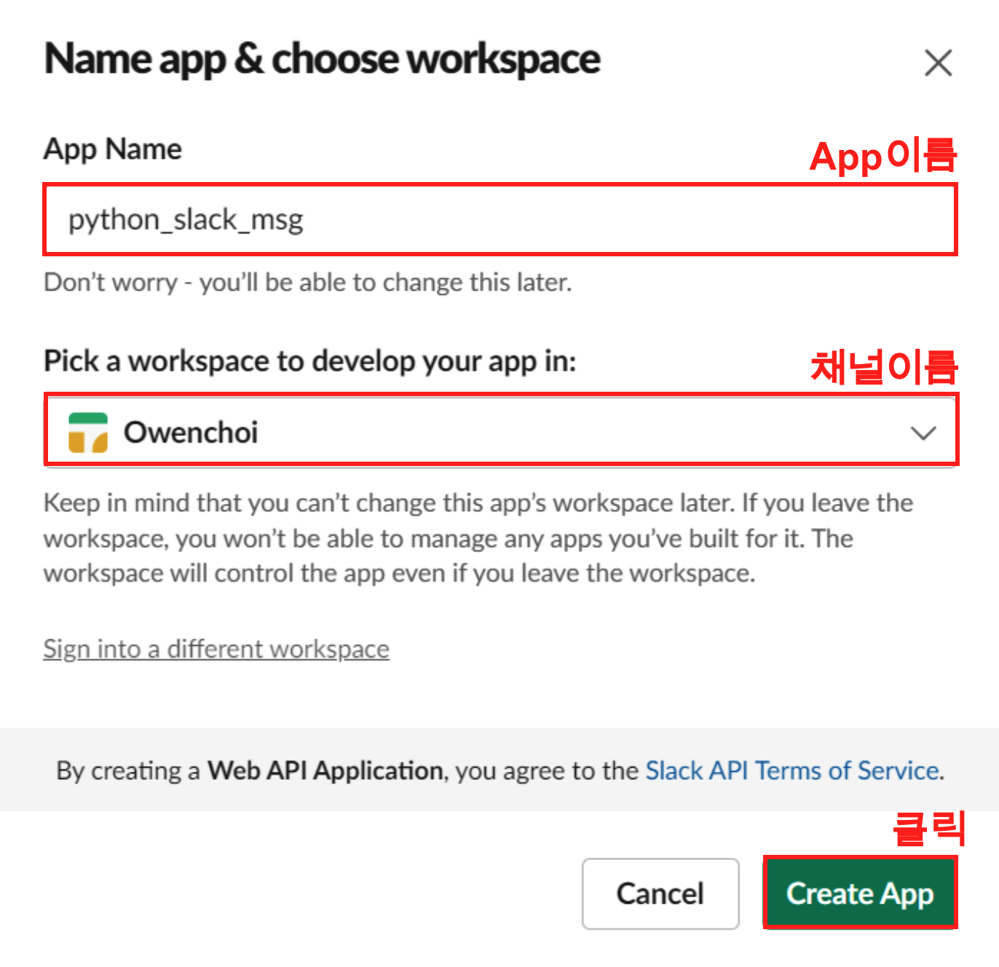
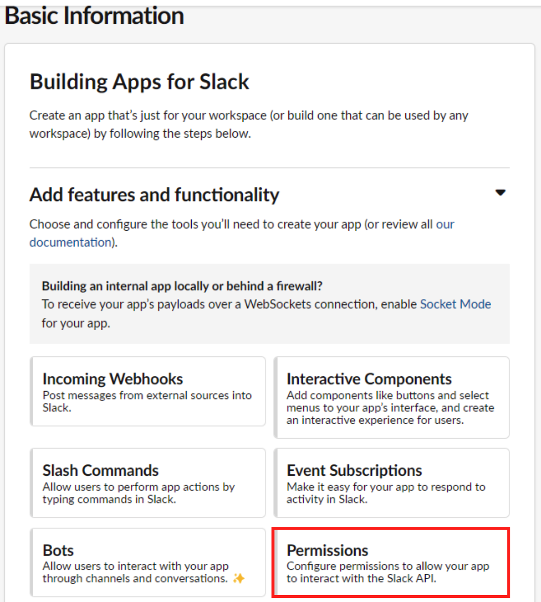
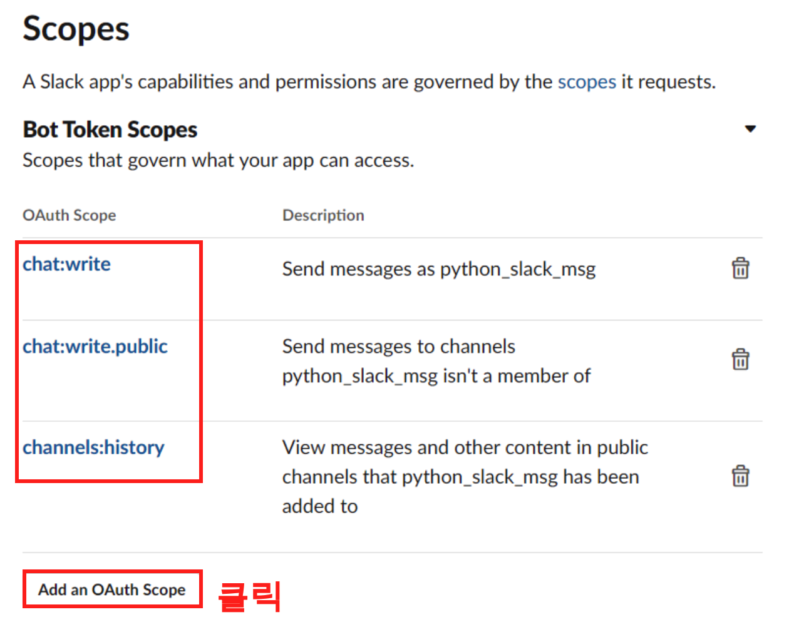
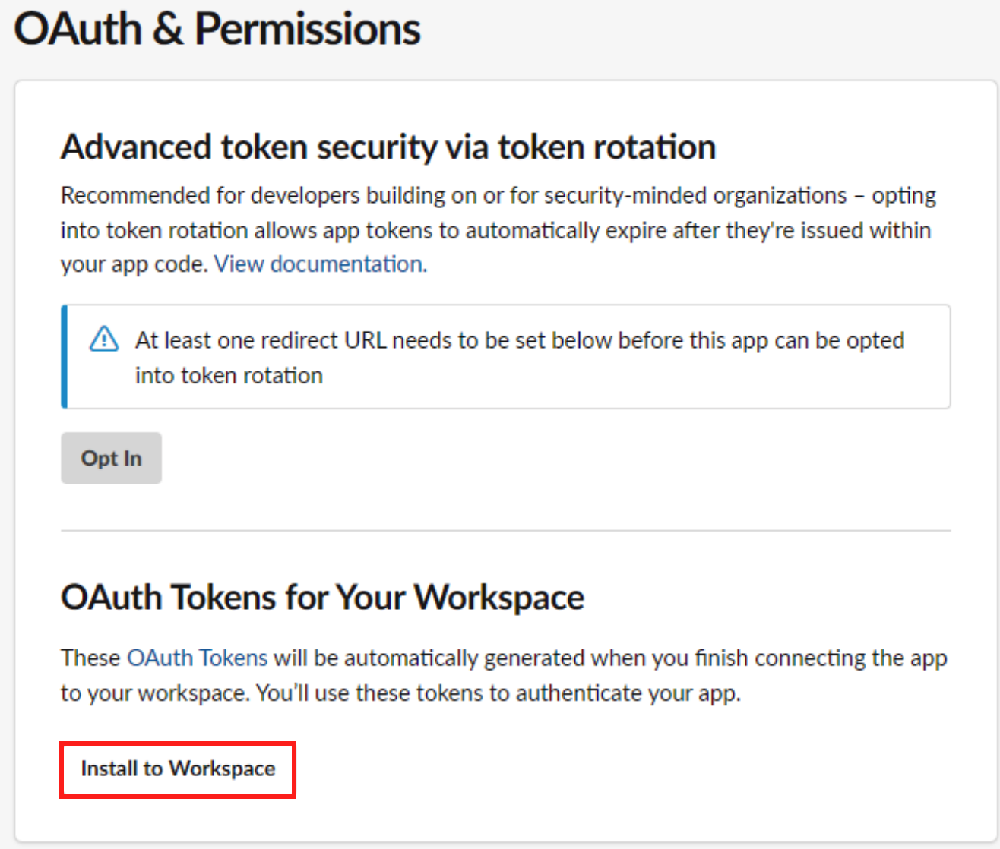
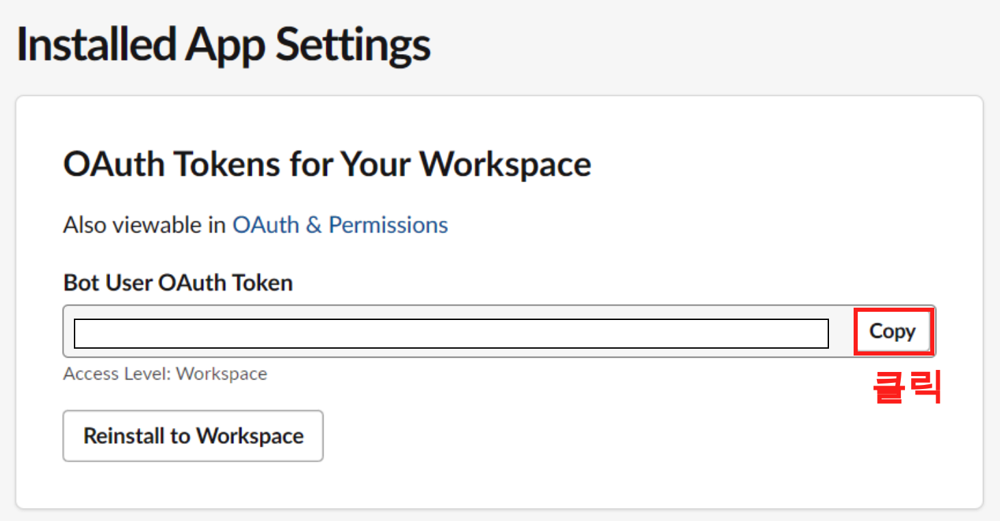
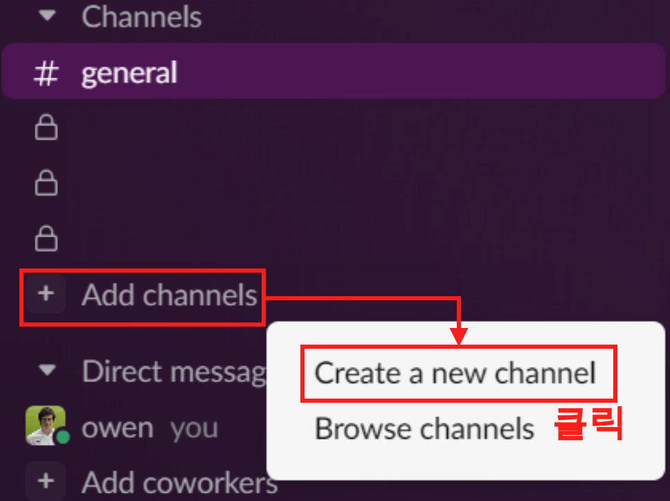
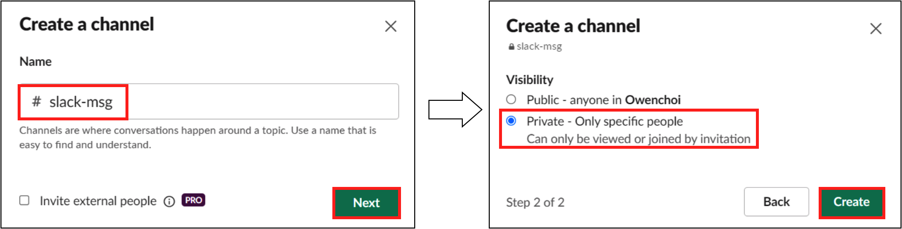
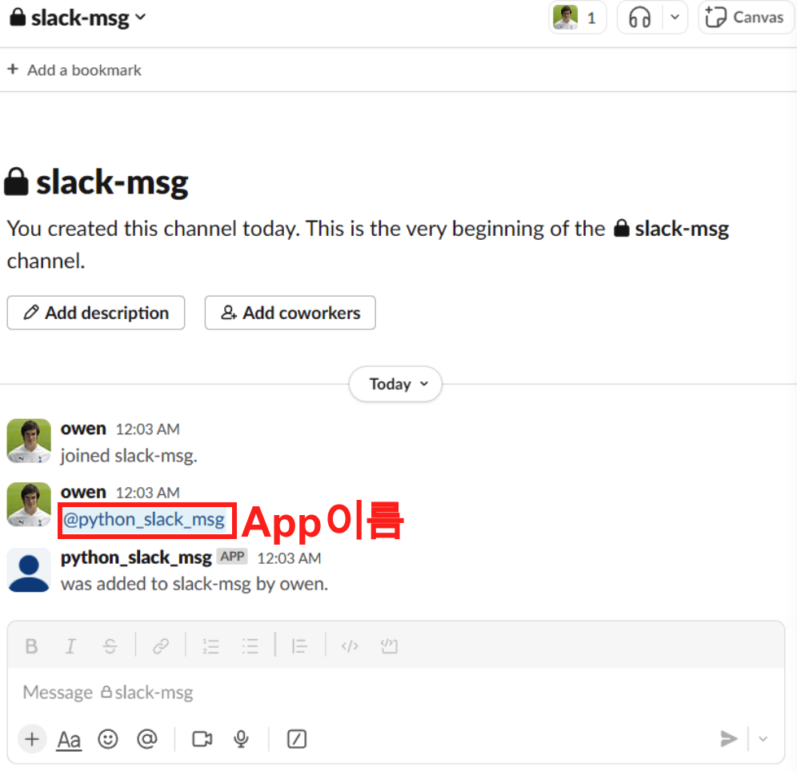
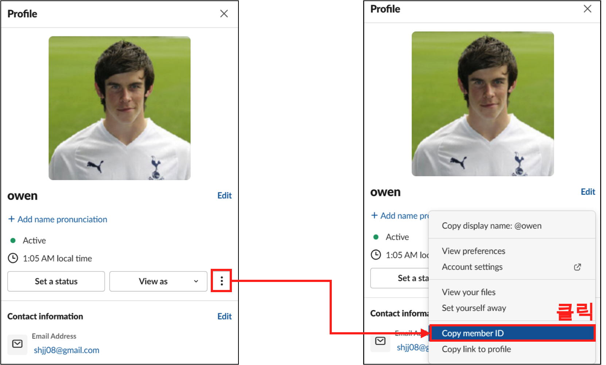
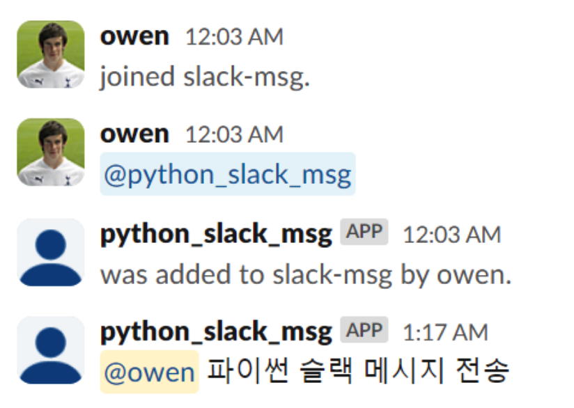

이번에는 파이썬으로 Slack 메시지를 보내 보자. 지난번에 Python으로 Gmail보내는 글을 썼었고, 데이터 수집에 대한 로그로 Gmail로 보냈었다. 그러나 매일 쌓여가는 로그 email이 쌓이다보니 정작 중요한 메일을 확인할 수 없는 상황이 오게 되었다. 그래서 이참에 파이썬으로 Slack 메시지 보내는 글을 적어 보려 한다. 본 블로그는 기본적으로 슬랙계정과 Workspace가 있어야 한다. 그럼 하나씩 알아보자.
Slack API Key 생성하기
우선 Slack api에 접근하기 위해 다음의 링크를 접속 해보자. Slack에 메시지의 권한을 갖는 api를 얻기 위함이다.
Step 1.
링크를 타고 들어가면 다음과 같은 화면을 확인할 수 있다. 여기서 ‘Create New App’ 버튼을 클릭하고 ’From scratch’를 클릭해준다.

Step 2.
그러면 App Name과 Workspace 입력 란이 나오는데, 다음과 같이 입력해주고 ‘Create App’ 버튼을 클릭해주면 된다.

Step 3.
이번에는 Slack에 메시지를 위한 권한을 부여해줄 차례다. Permissions버튼을 클릭해주자.

Step 4.
이제 권한을 부여해줄 차례이다. 스크롤을 해서 아래로 화면을 내리면 Scopes 부분이 나오는데 이곳에서 ’Add on OAuth Scope’버튼을 클릭하고 각각의 권한을 부여해주자.
- chat:write
- chat:write.public
- channels:history

Step 5.
그리고 다시 스크롤을 올려, ‘Install to Workspace’ 버튼을 클릭해주자.

Step 5.
그러면 이제 다음과 같이 OAuth Token 을 얻을 수 있다. 이 Token은 복사 해서 보관해두자.

Slack App 추가
이번에는 메시지를 받을 슬랙 채널을 추가 하고 메시지를 보낼 App을 여기에 추가 해주자. Step 2에서 생성한 App name을 추가할 예정이다.
Step 1.
Add channels 버튼을 클릭하고 Create a new channel 버튼을 클릭해주자

Step 2.
slack-msg 라는 채널을 만들어주고 비공개로 만들어주었다.

Step 3.
채널을 만들고 Step 2에서 만들어둔 app을 추가 해주자. python_slack_msg라고 만들었으니 @python_slack_msg을 해주어 채널에 추가 시켜주었다.

Step 4.
이번엔 내 계정의 member ID를 얻어 보자. 이는 선택 사항이며, 메시지를 보낼때 멘션을 걸어서 확인하기 위함이다

Python Slack 메시지 전송
여기까지 우리는
- Slack app을 생성했고,
- token 을 얻었고,
- Slack 채널에 slack app을 추가 해주었고,
- 내 계정의 Member ID를 만들었다.
이제 이를 사용해서 파이썬에서 슬랙으로 메시지를 보내보자.
Step 1.
우선 슬랙에 보내기 위한 slack_sdk 를 설치 해주자.
pip3 install slack_sdk
Step 2.
파이썬 코드는 간단하다. 다음의 코드를 그대로 적어 주면 된다.
import slack_sdk
slack_token = 'Bot User OAuth Token'
client = slack_sdk.WebClient(token=slack_token)
user_id = "멘션할 사용자 ID"
slack_msg = f'<@{user_id}> 파이썬 슬랙 메시지 전송'
response = client.chat_postMessage(
channel="slack_msg",
text=slack_msg
)
위 코드를 사용해서 테스트를 하면 다음과 같이 결과를 확인할 수 있다.
